50 anos de democracia, presidentes, primeiros-ministros, acontecimentos históricos e partidos políticos
Todos os momentos que definiram Portugal democrático, incluindo impactos da Guerra na Ucrânia
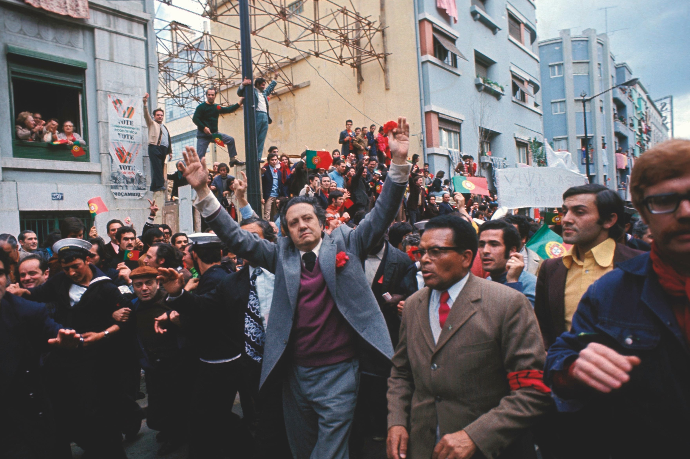
O Movimento das Forças Armadas (MFA) derruba o regime ditatorial do Estado Novo, iniciando a transição para a democracia. Soldados recebem cravos vermelhos da população nas ruas de Lisboa. Fim de 48 anos de ditadura.
Realizadas as primeiras eleições livres em Portugal, para a Assembleia Constituinte. O PS obtém 37,9% dos votos, o PPD/PSD 26,4%, o PCP 12,5% e o CDS 7,7%. Participação histórica de 91,7%.
Angola torna-se independente de Portugal, após séculos de colonização. Juntamente com Moçambique (Junho 1975), Cabo Verde, S. Tomé e Príncipe, e Guiné-Bissau, marcam o fim do império colonial português.
Aprovada a Constituição da República Portuguesa, que estabelece o regime democrático, o Estado de Direito e os direitos fundamentais dos cidadãos. Ainda em vigor, foi revista 7 vezes (1982, 1989, 1992, 1997, 2001, 2004, 2005).
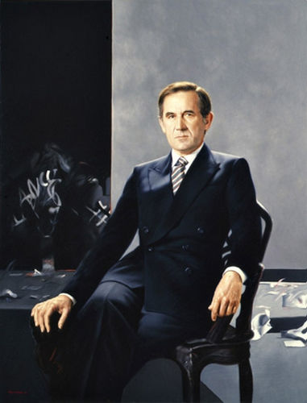
O General António Ramalho Eanes é eleito Presidente da República com 61,5% dos votos. Governa dois mandatos (1976–1986), sendo o primeiro presidente eleito por sufrágio universal direto na democracia portuguesa.
Mário Soares (PS) torna-se o primeiro Primeiro-Ministro constitucional de Portugal, chefiando o I Governo Constitucional. Governa até julho de 1978, num período de grande instabilidade política.
Portugal atravessa um período de grande instabilidade com vários governos de curta duração: Nobre da Costa (1978), Mota Pinto (1978-79), Maria de Lurdes Pintassilgo (1979) — primeira mulher PM — e Diogo Freitas do Amaral (AD, 1980).
As maiores cheias do século XX na bacia do Rio Tejo afetam gravemente as regiões de Santarém, Abrantes e Lisboa. Milhares de famílias são evacuadas e dezenas de localidades ficam inundadas ao longo de semanas.
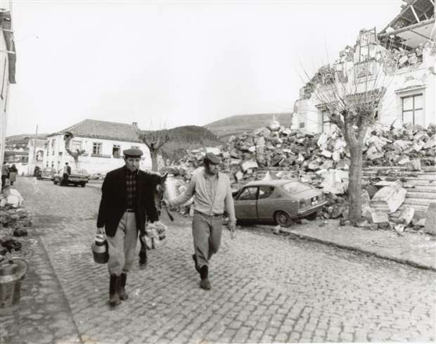
Um sismo de magnitude 7,2 destrói grande parte da ilha Terceira nos Açores, matando 73 pessoas e ferindo mais de 400. Mais de 15.000 ficam sem abrigo. Angra do Heroísmo sofre danos gravíssimos.
O líder do PSD e Primeiro-Ministro Francisco Sá Carneiro morre num acidente de avião em Camarate, junto com Adelino Amaro da Costa. O acidente permanece envolto em mistério e foi alvo de várias investigações parlamentares ao longo dos anos.
Cheias rápidas em áreas urbanas densas provocam 10 mortes na região de Lisboa, Loures e Cascais. Cerca de 1.800 famílias ficam desalojadas. As cheias afetam gravemente bairros periféricos da capital.
Portugal pede assistência ao FMI pela segunda vez (a primeira foi em 1977-78). O governo de Mário Soares (PS) implementa medidas de austeridade para estabilizar a economia. O desemprego e a inflação atingem valores elevados.
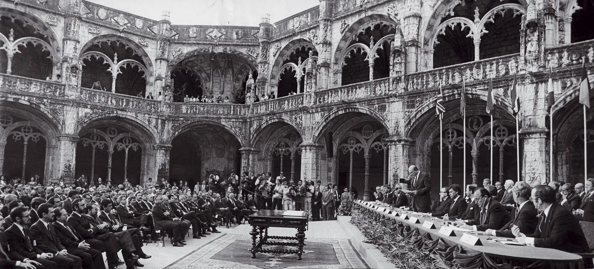
Portugal adere à Comunidade Económica Europeia (CEE), juntamente com Espanha. A adesão marca uma viragem histórica no desenvolvimento económico e social do país, com acesso a fundos estruturais europeus.
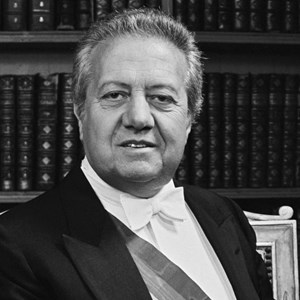
Mário Soares (PS) é eleito Presidente da República, tornando-se o primeiro presidente civil desde 1926. Governa dois mandatos até 1996, sendo um dos mais carismáticos presidentes da democracia portuguesa.
Aníbal Cavaco Silva (PSD) conquista a primeira maioria absoluta da democracia portuguesa com 50,2% dos votos. Governa até 1995, num período de forte crescimento económico impulsionado pelos fundos europeus.
Um avião da Independent Air cai na ilha de Santa Maria, nos Açores, matando 144 pessoas. É um dos maiores acidentes aéreos da história de Portugal.
Um avião da Martinair cai no aeroporto de Faro durante uma tempestade, matando 56 pessoas. O acidente levanta questões sobre as condições de segurança do aeroporto algarvio.
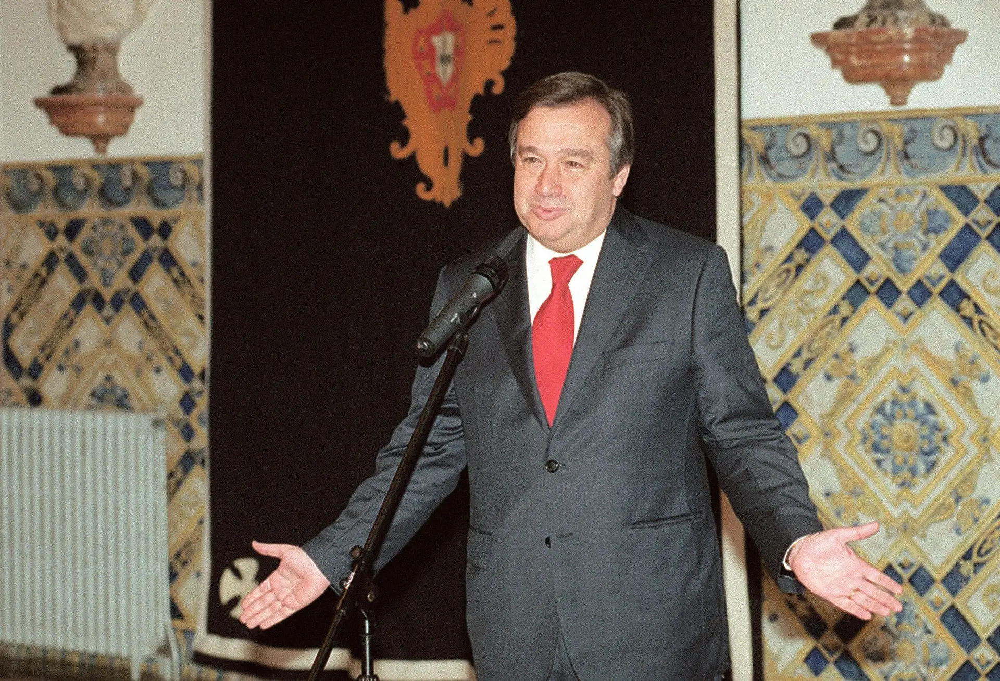
António Guterres (PS) torna-se Primeiro-Ministro, iniciando um período de governação socialista. Governa até 2002, num período de crescimento económico e de preparação para o Euro. Mais tarde tornar-se-ia Secretário-Geral da ONU.
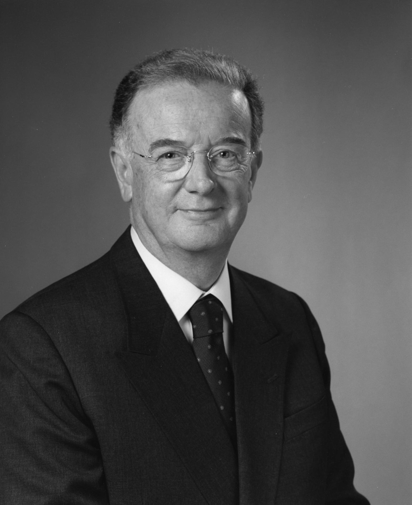
Jorge Sampaio (PS) é eleito Presidente da República com 53,8% dos votos, derrotando Cavaco Silva. Governa dois mandatos até 2006, sendo recordado pela sua posição contra a guerra do Iraque e pela gestão da crise política de 2004.
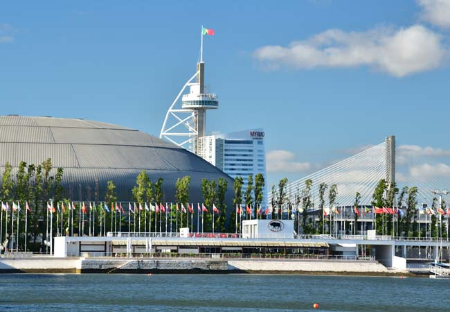
Lisboa acolhe a Exposição Mundial de 1998, sob o tema "Os Oceanos: Um Património para o Futuro". O evento transforma a zona oriental da cidade (Parque das Nações) e atrai mais de 10 milhões de visitantes.
Portugal entrega a administração de Macau à República Popular da China, encerrando mais de 400 anos de presença portuguesa no território. É o último ato da descolonização portuguesa.
A ponte Hintze Ribeiro, em Entre-os-Rios, colapsa, provocando a queda de um autocarro e três automóveis no rio Douro. Morrem 59 pessoas. O Ministro Jorge Coelho demite-se assumindo a responsabilidade política.
O Euro substitui o Escudo como moeda oficial de Portugal. A transição marca a integração plena na União Económica e Monetária europeia.
Uma onda de calor extrema provoca os piores incêndios florestais da história de Portugal até então, ardendo mais de 425.000 hectares. Morrem 21 pessoas e os danos económicos são imensos.
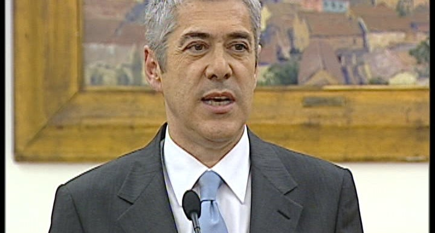
José Sócrates (PS) conquista a primeira maioria absoluta do Partido Socialista. Governa até 2011, num período marcado por grandes investimentos públicos e, mais tarde, pela crise financeira.
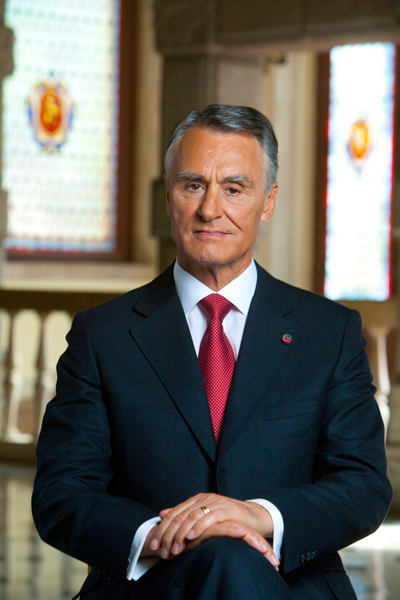
Aníbal Cavaco Silva (PSD) é eleito Presidente da República à primeira volta com 50,6% dos votos. É o primeiro presidente de centro-direita eleito por sufrágio direto na democracia.
O Banco Português de Negócios (BPN) é nacionalizado após a descoberta de fraudes massivas. Pouco depois, o Banco Privado Português (BPP) entra em colapso. É o início de uma grave crise no setor bancário português.
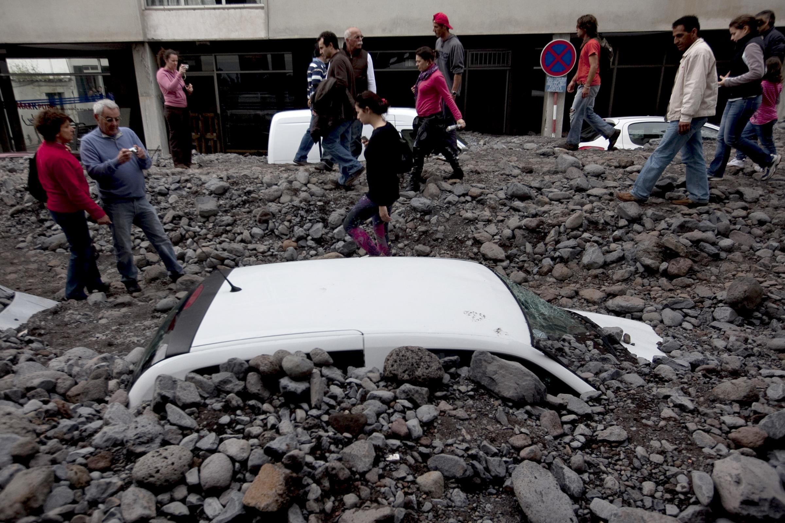
Chuvas torrenciais provocam inundações e deslizamentos de terra devastadores na ilha da Madeira, especialmente no Funchal. Morrem 42 pessoas e os prejuízos materiais superam os mil milhões de euros.
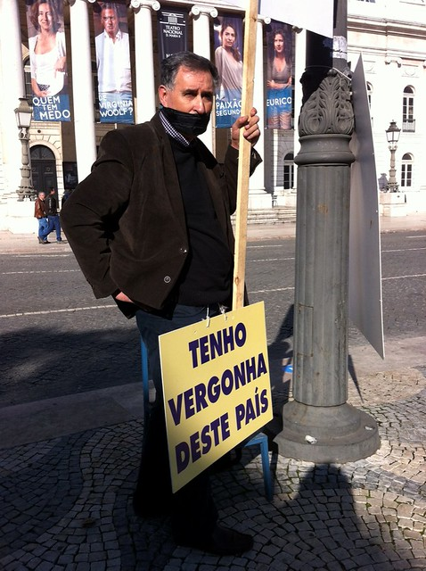
O Primeiro-Ministro José Sócrates anuncia o pedido de assistência financeira internacional. Portugal recebe um empréstimo de 78 mil milhões de euros em troca de um programa de austeridade severo.
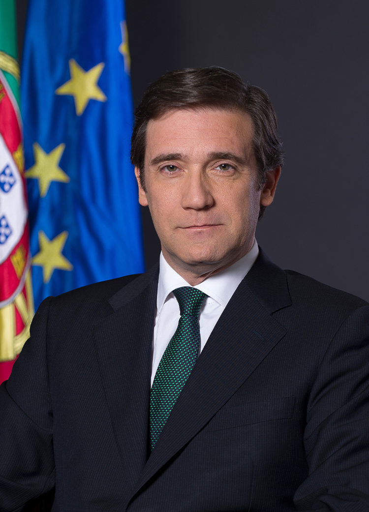
Pedro Passos Coelho (PSD) torna-se Primeiro-Ministro, liderando um governo de coligação com o CDS-PP. O mandato é marcado pela implementação das medidas da Troika e por fortes protestos sociais.
O Banco de Portugal anuncia a resolução do BES, após a descoberta de irregularidades graves no Grupo Espírito Santo. O banco é dividido em "banco bom" (Novo Banco) e "banco mau".
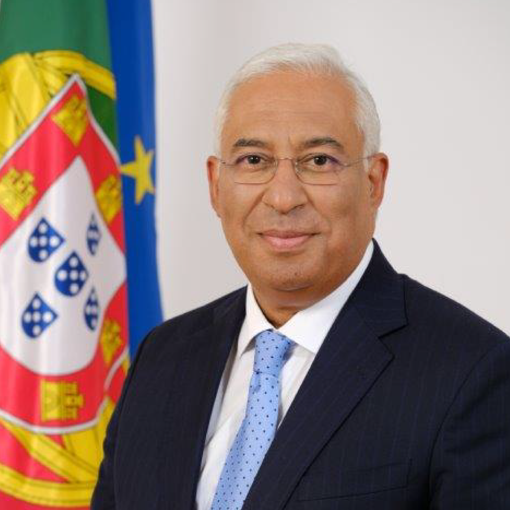
António Costa (PS) torna-se Primeiro-Ministro através de um acordo parlamentar inédito com o BE, PCP e PEV, conhecido como "Geringonça". O governo foca-se na reversão de medidas de austeridade.
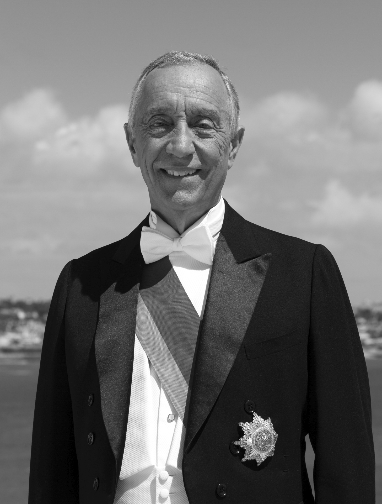
Marcelo Rebelo de Sousa (PSD) é eleito Presidente da República à primeira volta com 52% dos votos. O seu estilo de proximidade e "afetos" marca uma nova era na presidência portuguesa.
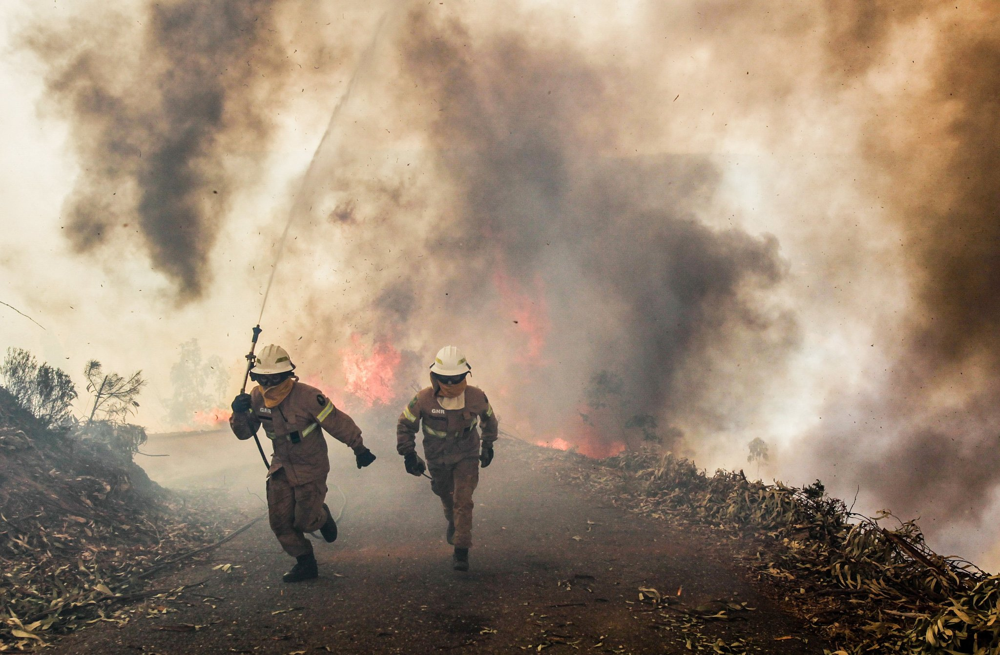
Um incêndio florestal devastador em Pedrógão Grande provoca a morte de 66 pessoas, muitas delas presas na Estrada Nacional 236-1. É a maior tragédia humana em incêndios florestais em Portugal.
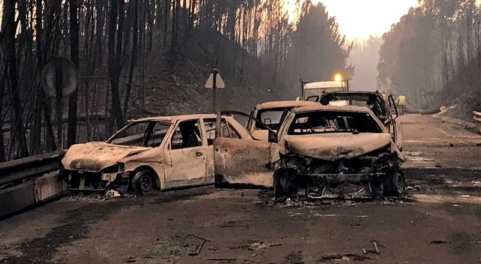
Uma nova vaga de incêndios florestais atinge o centro e norte de Portugal, provocando 45 mortos. A tragédia leva à demissão da Ministra da Administração Interna, Constança Urbano de Sousa.
António Costa conquista a segunda maioria absoluta da história do PS nas eleições legislativas antecipadas. O governo enfrenta desafios como a inflação e crises em setores como a saúde e habitação.
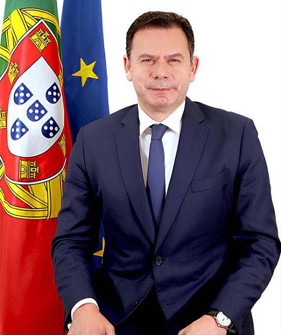
Luís Montenegro (PSD) torna-se Primeiro-Ministro, liderando um governo de coligação minoritária da Aliança Democrática (PSD/CDS/PPM) após as eleições legislativas de Março.
A invasão russa da Ucrânia desencadeia uma crise energética e alimentar global. Portugal enfrenta uma inflação histórica, com os preços da energia e alimentos a atingirem níveis record. A inflação chega aos 10% em 2022, a mais elevada em décadas.
Os preços do gás natural e eletricidade explodem na Europa. Portugal implementa medidas de controlo de preços e apoios às famílias e empresas. A dependência de energia russa coloca a UE sob pressão, acelerando a transição para energias renováveis.
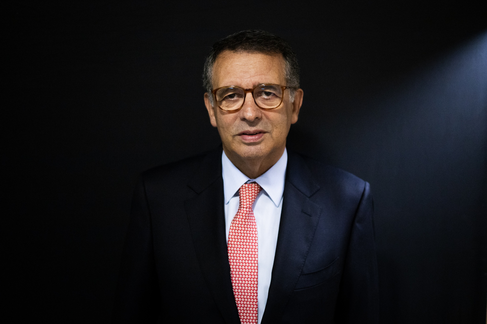
António José Seguro vence a segunda volta das eleições presidenciais com 66,7% dos votos, derrotando André Ventura (Chega). A vitória marca o regresso de Seguro à política ativa após anos de ausência.
Portugal é atingido por nove tempestades consecutivas nos primeiros dois meses do ano. Fevereiro de 2026 torna-se o mês mais chuvoso dos últimos 47 anos, causando inundações severas e danos estruturais em todo o país.
António José Seguro toma posse na Assembleia da República como o 21.º Presidente da República Portuguesa, sucedendo a Marcelo Rebelo de Sousa após 10 anos de mandato deste último.
Todos os Presidentes desde o 25 de Abril de 1974
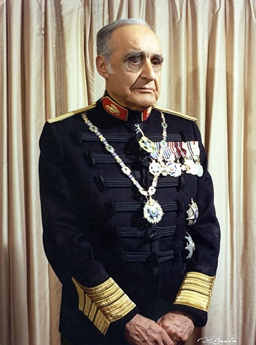
General e herói da Guerra Colonial, liderou a Junta de Salvação Nacional após o 25 de Abril. Renunciou após tensões com o MFA. Autor do livro "Portugal e o Futuro" (1974).
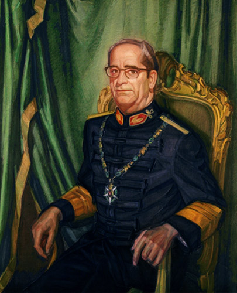
Chefe do Estado-Maior das Forças Armadas, assumiu a presidência após a demissão de Spínola. Governou durante o turbulento PREC e supervisionou a transição para a democracia constitucional.
Herói do 25 de Novembro de 1975, foi eleito com 61,5% dos votos. Governou dois mandatos, sendo o primeiro presidente eleito por sufrágio universal direto na democracia. Fundou o PRD em 1985.
Primeiro presidente civil desde 1926. Fundador do PS, foi também Primeiro-Ministro (1976-78 e 1983-85). Governou dois mandatos presidenciais, sendo um dos mais carismáticos políticos da democracia portuguesa.
Antigo presidente da Câmara de Lisboa, foi eleito com 53,8% dos votos. Governou dois mandatos, sendo recordado pela sua posição contra a guerra do Iraque (2003) e pela gestão da crise política de 2004.
Antigo Primeiro-Ministro (1985-1995), foi eleito presidente à primeira volta com 50,6%. Governou dois mandatos durante a crise económica e a intervenção da Troika, sendo alvo de críticas pela sua gestão do período de austeridade.
Professor universitário e comentador televisivo, foi eleito à primeira volta com 52% dos votos. Reeleito em 2021 com 60,7%. Conhecido pela proximidade com os cidadãos, pelos banhos de multidão e pelo estilo comunicativo informal.
Antigo Secretário-Geral do PS, regressou à vida política ativa para vencer as eleições presidenciais de 2026 na segunda volta contra André Ventura. Tomou posse como o 21.º Presidente da República a 9 de Março de 2026.
Todos os Primeiros-Ministros desde o 25 de Abril de 1974
| # | Nome | Período | Partido | Governo(s) |
|---|---|---|---|---|
| 1 | Adelino da Palma Carlos | 16 Mai 1974 — 18 Jul 1974 | Independente | I Gov. Provisório |
| 2 | Vasco dos Santos Gonçalves | 18 Jul 1974 — 19 Set 1975 | PCP (apoio) | II, III, IV, V Gov. Provisório |
| 3 | José Baptista Pinheiro de Azevedo | 19 Set 1975 — 23 Jul 1976 | Independente | VI Gov. Provisório |
| 4 | Mário Soares | 23 Jul 1976 — 28 Jul 1978 | PS | I e II Gov. Constitucional |
| 5 | Alfredo Nobre da Costa | 28 Jul 1978 — 22 Nov 1978 | Independente | III Gov. Constitucional |
| 6 | Carlos da Mota Pinto | 22 Nov 1978 — 7 Jul 1979 | PSD | IV Gov. Constitucional |
| 7 | Maria de Lurdes Pintassilgo | 7 Jul 1979 — 3 Jan 1980 | Independente | V Gov. Constitucional |
| 8 | Francisco Sá Carneiro | 3 Jan 1980 — 4 Dez 1980 | PSD (AD) | VI Gov. Constitucional |
| 9 | Diogo Freitas do Amaral | 4 Dez 1980 — 9 Jan 1981 | CDS (AD) | VI Gov. Constitucional (interino) |
| 10 | Francisco Pinto Balsemão | 9 Jan 1981 — 9 Jun 1983 | PSD (AD) | VII e VIII Gov. Constitucional |
| 11 | Mário Soares | 9 Jun 1983 — 6 Nov 1985 | PS (C. Central) | IX Gov. Constitucional |
| 12 | Aníbal Cavaco Silva | 6 Nov 1985 — 28 Out 1995 | PSD | X, XI e XII Gov. Constitucional |
| 13 | António Guterres | 28 Out 1995 — 6 Abr 2002 | PS | XIII e XIV Gov. Constitucional |
| 14 | José Manuel Durão Barroso | 6 Abr 2002 — 17 Jul 2004 | PSD | XV Gov. Constitucional |
| 15 | Pedro Santana Lopes | 17 Jul 2004 — 12 Mar 2005 | PSD | XVI Gov. Constitucional |
| 16 | José Sócrates | 12 Mar 2005 — 21 Jun 2011 | PS | XVII e XVIII Gov. Constitucional |
| 17 | Pedro Passos Coelho | 21 Jun 2011 — 26 Nov 2015 | PSD | XIX e XX Gov. Constitucional |
| 18 | António Costa | 26 Nov 2015 — 2 Abr 2024 | PS | XXI, XXII e XXIII Gov. Constitucional |
| 19 | Luís Montenegro | 2 Abr 2024 — presente | PSD (AD) | XXIV Gov. Constitucional |
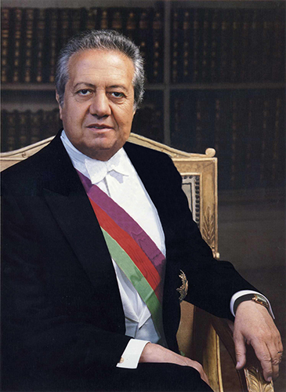
Vasco GonçalvesPartidos atualmente registados com representação parlamentar ou histórica relevante
Fundado por Francisco Sá Carneiro e outros como PPD (Partido Popular Democrático), adotou a designação PSD em 1976. É um dos dois partidos dominantes da democracia portuguesa, tendo governado com maioria absoluta (1987-1995) e em coligação.
Fundado por Mário Soares no exílio, é o principal partido de centro-esquerda. Governou Portugal em múltiplos períodos, incluindo as maiorias absolutas de Sócrates (2005) e Costa (2022). Membro da Internacional Socialista e do PES.
Fundado por André Ventura, cresceu rapidamente de 1 deputado em 2019 para 60 em 2025, tornando-se o terceiro maior partido. Defende políticas de lei e ordem, combate à corrupção e imigração controlada.
Partido liberal fundado em 2017, defende a redução do Estado, livre mercado e liberdades individuais. Cresceu de 1 deputado em 2019 para 9 em 2025. Membro da ALDE europeia.
Fundado pela fusão de vários partidos de esquerda (PSR, UDP, Política XXI), o BE tornou-se uma força relevante na esquerda portuguesa, chegando a 19 deputados em 2019. Apoiou o governo de António Costa (2015-2019).
O mais antigo partido português ainda em atividade, fundado em 1921. Operou na clandestinidade durante o Estado Novo. Após o 25 de Abril, foi uma força relevante, chegando a 40 deputados em 1976. Integra a coligação CDU com o PEV.
Fundado por Diogo Freitas do Amaral, é o principal partido democrata-cristão português. Participou em vários governos de coligação com o PSD. Atualmente integra a Aliança Democrática (AD) liderada pelo PSD.
Fundado em 2014, o LIVRE é um partido de esquerda progressista e ecologista. Defende o Rendimento Básico Incondicional e uma integração europeia mais profunda. Elegeu o seu primeiro deputado em 2019.
Focado na causa animal e ambiental, o PAN elegeu o seu primeiro deputado em 2015. Defende uma mudança de paradigma na relação entre humanos e natureza.